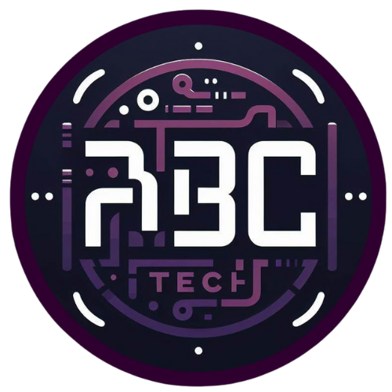

LOGO
INÍCIO
CURSOS
COLABORE
CONTATO
CADASTRE-SE
Nossos Cursos
Confira nossos cursos gratuítos com certificado.
HTML
Linguagem de Marcação de HiperTexto para você conseguir criar conteúdos para sites.
CSS
A CSS(Folhas de Estilo em Cascata) ajuda a editar, alinhar, remover e trabalhar no espaço entre elementos de uma página.
Javascript
É uma linguagem de programação que permite a você implementar itens complexos em páginas web — toda vez que uma página da web faz mais do que simplesmente mostrar a você informação estática — mostrando conteúdo que se atualiza em um intervalo de tempo, mapas interativos ou gráficos 2D/3D animados, etc. Nosso curso de Javascript também conta com o aprendizado de
Lógica de programação
para ajudar a o estudante a implementar códigos consisos e boas práticas no seu aprendizado.
JAVA
Java é uma linguagem multiplataforma, orientada a objetos e centrada em rede que pode ser usada como uma plataforma em si. É uma linguagem de programação rápida, segura e confiável para codificar tudo, desde aplicações móveis e software empresarial até aplicações de big data e tecnologias do servidor.